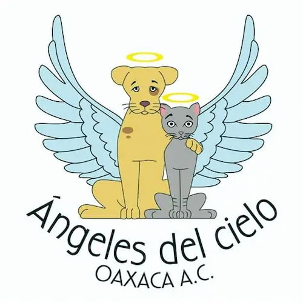
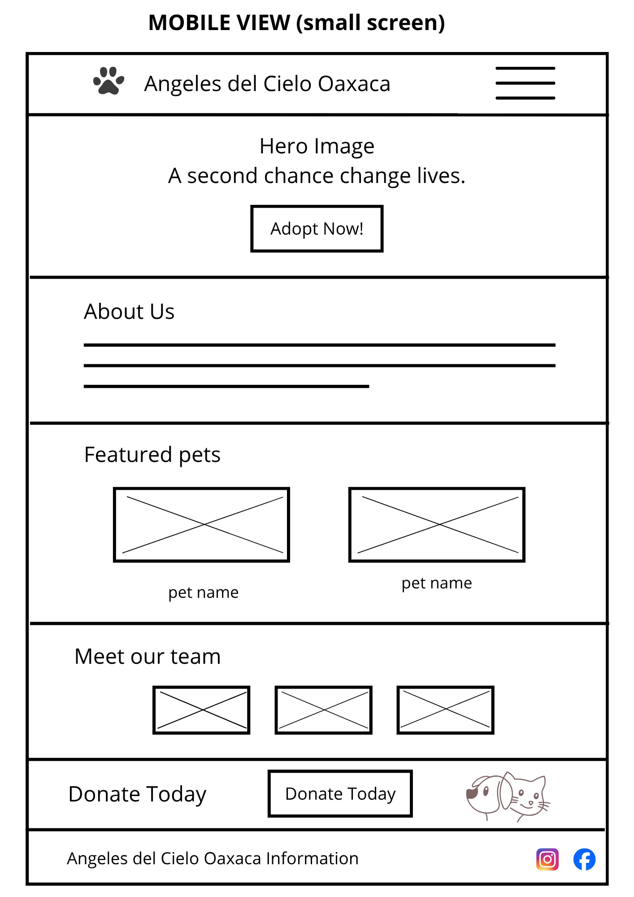
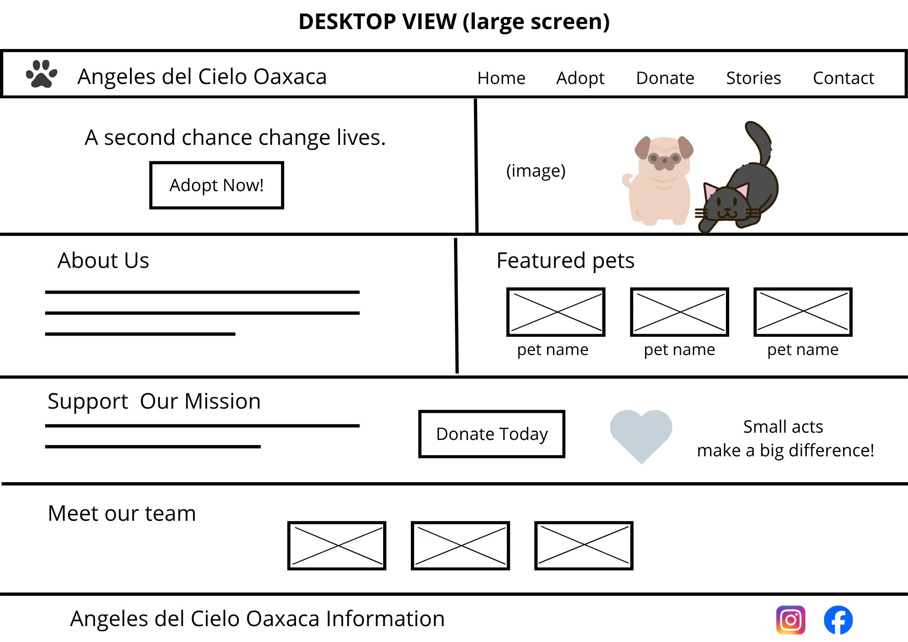

The name Angeles del Cielo was selected because it represents an animal rescue organization dedicated to rescuing, sterilizing and finding loving homes for abandoned and vulnerable animals.
Optional domain angelesdelcielooaxaca.org
Site Purpose
The purpose of this website is to provide information about Angeles del Cielo, including its mission, rescued animals available for adoption, donation options, success stories and contact information.
Scenarios
1. Which animals are currently available for adoption?
2. How can I donate to support the rescue organization?
Color Scheme
- #2A2B2A: Main text and body content
- #223FBB: Header, Footer and primary headings
- #1E96FC: Secondary headings, links and buttons
- #add7f3: Main background color and content sections
- #FFC600: Buttons such as Donate and Adopt
- #FCF300: Effects and highlighted elements.
Typography
1. Trebuchet MS, Open Sans: Body text, paragraphs
2. Roboto: Headings
Wireframes
Mobile View

Desktop View
